© Alexander Raths/iStockphoto
In Module 6 you learned to use the stoichiometric method to predict the quantities of the reactants and products involved in a chemical reaction. In this module you will continue to apply your ability to analyze chemical systems using mathematical relationships.
Is it possible to predict the amount of product that would result if you were given defined quantities of each reactant? You will perform a titration, which is a standard laboratory technique used for chemical analysis. You will then use the results from your titration to communicate information to others about the substance tested.
Think about the following questions as you complete this module:
Photo courtesy Kennedy Space Center/NASA
In Module 6 you explored one of the greatest achievements of humans—the ability to explore space. As you found in your study, successful space travel depends heavily on life-support systems. Many of these systems are developed using stoichiometric principles.
As you will see in this module, the careful planning and design of life-support systems must involve a knowledge of chemical systems and the quantities of substances involved.
© Alexander Raths/iStockphoto
Even if you are not planning to travel into space anytime soon, you may have concerns about the food space travellers eat or the environment in which they live. Quantitative techniques are used to monitor the nutritional content of foods and the concentration of toxic substances present in the environment.
In this module you will apply your knowledge of stoichiometry and explore how stoichiometry is used in the design and analysis of a variety of chemical systems.
The focus of this lesson is to learn how to apply your knowledge of stoichiometry to determine which reactant will be the first to deplete during a chemical reaction. Understanding the calculations used to determine the limiting reagent can be applied to a variety of situations, including specifying the quantities of reactants that should be used in a laboratory procedure that you design and determining the necessary quantities of chemicals used in a life-support system for a spacecraft.
How can limiting reagents be used to predict the amount of product for a chemical process?
In this lesson you will learn about titration, which is a process used to determine the quantity of substance in a test sample. Although many methods can be used to determine quantity, titration is one of the most reliable and easily performed experimental procedures. You will see how your knowledge of stoichiometry can be used to analyze the data collected during a titration experiment. In addition, you will see how titration can be used to study an acid-base chemical system and other chemical systems.
How can titration be used to calculate the quantity of solute within a solution?
In Lesson 2 you performed a titration. In this lesson you will construct a graph depicting the changes in concentration of key components in a chemical reaction. This graph is called a titration curve. You will also interpret a titration curve and identify aspects of this graph that demonstrate significant features of the chemical reaction.
In Module 5 you used indicators to determine the pH of a solution, and in Lesson 2 you used an indicator to identify the endpoint of a titration reaction. In this lesson you will learn how to use your titration curve to select appropriate indicators for a titration, allowing for precise and sensitive detection of the completion of a chemical reaction.
The assessment in this module consists of three lesson assignments.
Courtesy NASA
The Apollo 13 lunar mission was one of the defining moments in the history of space exploration. On April 11, 1970, disaster struck when one of two oxygen tanks exploded, significantly reducing the amount of breathable air available to the astronauts.
Because the spacecraft was over 300 000 km from Earth at the time of the explosion, there was no choice but for the mission to complete its scheduled course.
While the amount of oxygen remaining in the one working tank was sufficient to last the duration of the mission, there was another problem. Because of the explosion, the three astronauts had to move into the lunar module, a part of the spacecraft intended for only two people. With every breath the astronauts took, they released carbon dioxide gas into the lunar module, overwhelming the capacity of the system to remove carbon dioxide from the air. Since a higher level of carbon dioxide in the air can be toxic, the challenge facing NASA engineers on the ground was to figure out a way to control the concentration of carbon dioxide in the air inside the spacecraft using materials aboard the vessel.
How did they do it?
How can limiting reagents be used to predict the amount of product for a chemical process?
You will complete the Module 7 Assignment 1 in this lesson.
Remember that the questions that are not marked by the teacher provide you with the practice and feedback that you need to successfully complete this course. You should respond to all the questions and place those answers in your course folder.
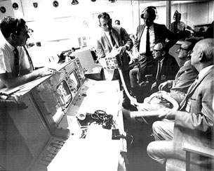
Courtesy NASA
The picture on the right shows NASA engineers hard at work after the explosion. The engineers are attempting to construct a carbon dioxide filtration system for the astronauts aboard the Apollo 13 spacecraft.
What scientific skills and attitudes do you think the scientists in this photo possess?
Save a copy of your answers to your course folder. You may wish to share your answers with your classmates or some other people.
In Module 6 you learned that baking powder is a combination of sodium hydrogen carbonate (baking soda) and potassium hydrogen tartrate (cream of tartar). Although these two substances are present in stoichiometric proportions in baking powder, what would be the result if one component were in excess relative to the other component?
Recall from your study in Module 5 that an excess of the sodium hydrogen carbonate—a basic compound known to have a bitter taste—could alter the taste of the food being baked. Similarly, an excess of potassium hydrogen tartrate could leave the finished product with a different undesirable taste, or it could allow for an unexpected reaction to occur with another ingredient.
Have you considered what effect a deficiency of one component relative to another might have on the quantity of carbon dioxide produced by the reaction? A cake that doesn’t rise to its desired height or texture may have been the unfortunate result of a component in the recipe being in a limited quantity relative to the other components.
How do you use your knowledge of stoichiometry to design a reaction that will ensure that it is a complete reaction?
Read “Calculating Mass of Excess Reagents” on page 320 of your textbook. Then work through “SAMPLE problem 8.1.”
SC 1. Complete “Practice” question 2 on page 321 of your textbook.
SC 1. “Practice” question 2, page 321
Zn(s) |
+ |
2 HCl(aq) |
→ |
ZnCl2(aq) |
+ |
H2(g) |
m = 2.00 g |
|
c = 2.00 mol/L |
|
|
|
|

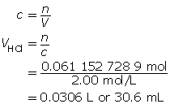
Now add 10% to this value.
30.6 mL + 3.1 mL = 33.7 mL
Have you ever ridden in a vehicle that ran out of gas before reaching the planned destination? A situation like this quickly reminds you that depleting one of the reactants in a chemical process causes the reaction to quit. Chemical reactions don’t have a fuel gauge like a vehicle does, so how can you use your knowledge of stoichiometry to identify the limiting reagent in a reaction?
Read “Identifying Limiting and Excess Reagents” on pages 321 to 323 of your textbook. Work through “SAMPLE problems” 8.2 and 8.3 and the “COMMUNICATION example.”
SC 2. 2.50 mol of propane, C3H8(g), is combusted with 12.0 mol of oxygen gas.
Write the balanced chemical equation.
Predict the limiting and excess reagents.
Calculate the volume of CO2(g) produced when the reaction is complete. Assume SATP conditions.
SC 3. 10.0 g of butane, C4H10(g), is combusted with 30.0 g of oxygen gas.
Write the balanced chemical equation.
Determine the number of moles of each reactant.
Predict the limiting and excess reagents.
Calculate the mass of CO2(g) produced when the reaction is complete.
SC 4. 2.00 L of methane, CH4(g), is combusted with 9.00 L of oxygen gas. Assume STP conditions.
Write the balanced chemical equation.
Determine the number of moles of each reactant.
Predict the limiting and excess reagents.
After the reaction is complete, the atmospheric conditions change. Calculate the volume of CO2(g) produced if the atmospheric pressure is now 99.0 kPa and the temperature is 19.0°C.
SC 5. A 12.0-mL sample of a 0.500-mol/L silver nitrate solution is mixed with 10.0 mL of 0.400-mol/L NaOH(aq). Calculate the mass of precipitate produced in the reaction.

SC 2.

SC 3.


SC 4.


 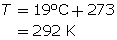
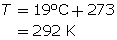
SC 5. Write the balanced chemical equation and the known substances involved.
AgNO3(aq) |
+ |
NaOH(aq) |
→ |
AgOH(s) |
+ |
NaNO3(aq) |
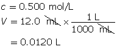 |
|
|
|
m = ? |
|
|
Determine the number of moles of each reactant.
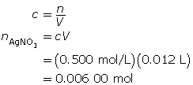 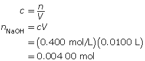
Use stoichiometry to predict the theoretical number of moles of NaOH(aq) required to react with 0.006 00 mol of AgNO3(aq).

To fully react with the silver nitrate, 0.006 00 mol of NaOH(aq) is required; but only 0.004 00 mol of NaOH(aq) is available. Therefore, the sodium hydroxide is the limiting reagent and the silver nitrate is in excess.
Calculate the mass of AgOH(s) produced when the reaction is complete.
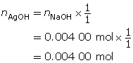 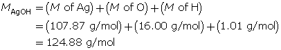

You will complete the Lab: Chemical Analysis Using a Graph as part of your Module 7: Lesson 1 Assignment. The instructions and questions are in the assignment.
Complete the first question in the Module 7 Lesson 1 Assignment according to the pathway you choose.
Complete the remaining questions in the Module 7: Lesson 1 Assignment.

Courtesy NASA
In this lesson you explored this essential question:
How can limiting reagents be used to predict the amount of product for a chemical process?
Developing a “quick fix” to control the CO2(g) concentration in the Apollo 13 spacecraft demonstrates what must be considered when chemical systems have a limited amount of one of the reactants.
As part of your Assessment you used stoichiometry to calculate the mass of lithium hydroxide necessary to remove excess carbon dioxide from the air inside a spacecraft on an Apollo mission. In a situation such as space travel, making careful calculations involving necessary components is essential to ensure the safety and success of the mission.
Courtesy NASA
Photo courtesy of Kennedy Space Center/NASA
In the mid-1960s, Tang (orange drink crystals) was used by astronauts during the Gemini spaceflights. One of the reasons for using Tang on this and current space missions is that it helps mask the taste of the by-products in the water the astronauts drink. A second benefit is that Tang contains high concentrations of vitamins A and C, helping astronauts meet their daily nutritional requirements.
The nutritional information on a juice box indicates that citrus juice is a rich source of vitamin C. The average daily requirement for vitamin C is 90 mg for men and 75 mg for women. Some juice boxes indicate that the product contains 80% of the recommended daily intake for vitamin C. If the claim on the juice box is true, how much vitamin C must be present in the juice solution?
How can you verify that the quantity of vitamin C you calculated is actually present in the juice? The obvious answer is that you would have to test the juice. As a consumer, you may have wondered if you are really getting what you are paying for.
How can you test juice to determine the concentration of vitamin C in it? In this lesson you will learn about titration—a process routinely used to determine the concentration of substances in a solution.
How can titration be used to calculate the quantity of solute in a solution?
You will complete the Module 7 Assignment 2 in this lesson.
Remember that the questions that are not marked by the teacher provide you with the practice and feedback that you need to successfully complete this course. You should respond to all the questions and place those answers in your course folder.
titration: a method of analyzing a solution by adding known amounts of a standardized solution until an endpoint is produced
A titration is a method of analyzing a solution by adding known amounts of a standardized solution until an endpoint is produced. This laboratory procedure is used to determine the concentration of a solute in a solution being tested. In Lesson 1 you studied the limiting reagent and how it influences the predictions made using stoichiometry. A titration involves the careful addition of one reactant to another to determine the exact point where one reactant becomes excess.
Read page 328 of “8.4 Titration Analysis” in your textbook to become familiar with some of the terms used in a titration analysis.
To view the video “Performing a Titration”, click on Module 7 Lesson 2 Page 2. Pay careful attention to how the equipment is used during this procedure.
Review the bolded terms shown on page 328 of your textbook. Match each of the following terms from the video with one of the terms from your textbook.
Term from the Video |
|
Term from the Textbook |
1. green solution colour |
|
A. titrant |
2. standard solution of 0.100-mol/L NaOH(aq) |
|
B. sample |
3. 10.00-mL acid solution |
|
C. endpoint |
Reading the level of the solution in the burette is an essential skill. To practise this skill, view the video a second time, pausing the video so you are able to read the solution level in the burette at the start and at the end of the trial. Compare the burette readings you made to the values stated in the video.

In the “Performing a Titration” video, you watched NaOH(aq) solution being added to an HCl(aq) acid solution until a permanent change in the colour of the bromothymol blue indicator occurred. How does the colour change for bromothymol blue signal the detection of the end of the reaction?
Recall from your study in Module 4 that bromothymol blue appears yellow in acidic solutions and blue in basic solutions. As shown in the video, a titration proceeds until an endpoint is reached. In this case, the excess NaOH(aq) added after all the acid in the sample had reacted creates a basic solution, causing the indicator to change colour.
The following data was collected during the titration shown in the “Performing a Titration” video. Use this data to determine the concentration of HCl(aq) in the sample tested.
Reactant |
HCl(aq) |
NaOH(aq) |
Location |
Erlenmeyer flask |
burette |
Volume |
10.00 mL |
13.89 mL |
Concentration of Reactant |
? |
0.100 mol/L |
HCl(aq) |
+ |
NaOH(aq) |
→ |
H2O(l) |
+ |
NaCl(aq) |
| 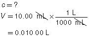 | 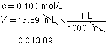 |
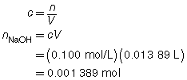 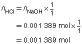
The concentration of the HCl(aq) solution is 0.139 mol/L.
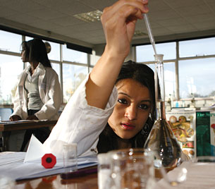
© Laurence Gough/shutterstock
Titrations can provide very accurate data. One means to ensure accuracy is by doing multiple trials. Multiple trials allow for selecting the most consistent trials for further analysis. One sign of consistency is obtaining a similar endpoint colour between trials.
Work through “SAMPLE problem 8.4” on page 329 of your textbook to see how titration data from multiple trials is analyzed.
After working through this sample problem, you may wonder why only three trials were required in this titration. As stated earlier, a titration is repeated until consistent results are obtained, such as endpoint colour and titrant volumes that are within 0.2 mL of each other.
SC 1. A 50.0-mL sample of HCl(aq) is titrated with 0.300-mol/L NaOH(aq). When the endpoint is reached, 35.0 mL of the titrant has been used. Calculate the concentration of the hydrochloric acid based on this one trial.
SC 2. A titration is performed to determine the concentration of KOH(aq) in a 40.0-mL sample. The endpoint is reached when 18.02 mL of 0.100-mol/L HNO3(aq) is added. Calculate the concentration of KOH(aq) based on this trial. If the manufacturer’s label for KOH(aq) says the concentration is 0.0480 mol/L, what is the percent difference for the experimental result?
SC 3. A 20.0-mL sample of calcium hydroxide is titrated with 0.100-mol/L hydrochloric acid until the endpoint is reached. The volume of titrant used for each trial is shown in the following table.
Trial |
1 |
2 |
3 |
Final Burette Reading (mL) |
22.7 |
45.2 |
67.6 |
Initial Burette Reading (mL) |
0.4 |
22.7 |
45.2 |
Using this data, calculate the concentration of the Ca(OH)2(aq).
SC 1.
HCl(aq) |
+ |
NaOH(aq) |
→ |
H2O(l) |
+ |
NaCl(aq) |
 |
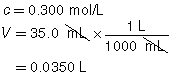 |
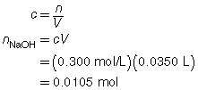 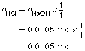

The concentration of the hydrochloric acid is 0.210 mol/L.
SC 2.
HNO3(aq) |
+ |
KOH(aq) |
→ |
KNO3(aq) |
+ |
H2O(l) |
 |
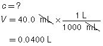 |


Based on the one trial, the concentration of KOH(aq) is 0.0451 mol/L.

SC 3.
Trial |
1 |
2 |
3 |
Final Burette Reading (mL) |
22.7 |
45.2 |
67.6 |
Initial Burette Reading (mL) |
0.4 |
22.7 |
45.2 |
Volume of Titrant (mL) |
22.3 |
22.5 |
22.4 |
The three volumes agree within 0.2 mL and are used to calculate the average volume of HCl(aq) required.
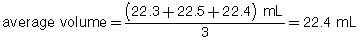
Ca(OH)2(aq) |
+ |
2 HCl(aq) |
→ |
CaCl2(aq) |
+ |
2 H2O(l) |
 |
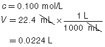 |
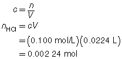 
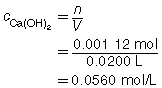
The concentration of Ca(OH)2(aq) is 0.0560 mol/L.
The data from the following lab will be used to answer questions in your Module 7 Lesson 2 Assignment.
So far in this lesson you have observed how titrations are performed. In this activity, you will complete a virtual lab investigation where you will perform a titration and analyze the data you collect. Click on Module 7 Lesson 2 Page 4 to go to the activity.
After you complete the titration lab, use the data to calculate the concentration of the hydroiodic acid solution tested.
Complete question 1 in the Module 7 Lesson 2 Assignment according to the pathway you choose.
The data from the following lab will be used to complete your Module 7 Lesson 2 Assignment.
A titration does not always have to involve an acid-base reaction. Analyze the information provided about a titration to determine the concentration of vitamin C in fruit juice.
Vitamin C, also called ascorbic acid, is commonly found in commercial fruit juices and drinks. In this activity you will analyze data collected from a titration analysis of a fruit juice.


Background Information
Ascorbic acid reacts with iodine in solution, as described by the following reaction:
ascorbic acid(aq) + I2(aq) → dehydroascorbic acid(aq) + 2 I−(aq)
In this procedure a standard aqueous iodine solution is added to a sample of juice. The initial reaction involves iodine reacting until the ascorbic acid in the juice sample depletes. The endpoint of this titration is a blue colour, signified by the reaction of excess iodine with starch (which is added to the juice prior to titration).
Earlier in this lesson you read that the average daily requirement for vitamin C is 90 mg for men and 75 mg for women.
Purpose
The purpose of this investigation is to test the manufacturer’s claim that the juice product contains 80% of the daily recommended amount of ascorbic acid.
Problem
What mass of vitamin C (ascorbic acid) is present in a box of juice?
Materials
Procedure
Step 1: Assemble the ring stand and burette clamp. Clean the burette using distilled water, and wash using a small quantity of the aqueous iodine solution. Place the burette in the clamp.
Step 2: Fill the burette with the aqueous iodine solution.
Step 3: Read and record the volume in the burette.
Step 4: Clean the pipette using distilled water, and wash using a small quantity of the fruit juice. Use the pipette to transfer 10.00 mL of juice to the Erlenmeyer flask.
Step 5: Add a few drops of the starch indicator solution to the Erlenmeyer flask.
Step 6: Add 40 mL of distilled water to the Erlenmeyer flask.
Step 7: Titrate the juice sample to the desired endpoint—a permanent dark blue colour. Measure and record the burette reading at the endpoint. Record the endpoint colour.
Step 8: Repeat steps 3 to 7 three more times (four trials altogether).
Observations
Titration of 10.00 mL Fruit Juice with 2.00 x 10−3 mol/L I2(aq)
Trial |
1 |
2 |
3 |
4 |
Final Burette Reading (mL) |
11.08 |
21.27 |
31.50 |
41.72 |
Initial Burette Reading (mL) |
0.05 |
11.03 |
21.27 |
31.50 |
Volume of I2(aq) Added (mL) |
11.03 |
10.19 |
10.23 |
10.22 |
Final Colour of Solution |
purple |
blue |
blue |
blue |
Analysis
The following questions are to be answered in your Module 7: Lesson 2 Assignment.
Use the data provided to answer question 2 in the Module 7 Lesson 2 Assignment.
In this lesson you explored the following essential question:
You performed a titration and analyzed the data collected during a titration experiment. Titration analysis can be used to verify the concentration of a substance in a solution or commercial product. Through your work in determining the mass of vitamin C in a juice box, you learned that the techniques involved in titrations can be used in situations other than acid-base reactions.
In the next lesson you will learn more about the design of a titration experiment and why it allows for precise determination of a solute’s concentration.
titration: a method of analyzing a solution by adding known amounts of a standardized solution until an endpoint is produced

Courtesy of Johnson Space Center/NASA
Legend has it that Neil Armstrong, the first man to walk on the Moon, was reluctant to go into space unless Aspirin was included on the mission. Aspirin tablets—used for relieving headaches and muscle pain—were included in the medical kit (shown here) of the Apollo 11 space capsule and for later space missions. The key ingredient in Aspirin is acetylsalicylic acid (ASA).
As you have discovered, titration is a process that can be used to determine the quantity of a substance in a sample. In this lesson you will learn more about the stoichiometry involved in the process of titration and why titration can provide such accurate and reliable data in quantitative analyses. You will also perform a titration of pain-relief tablets to determine the mass of ASA present.
How are titration graphs drawn?
How do you select an appropriate indicator for a titration?
You will complete the Lesson 7 Assignment 3 in this lesson.
Remember that the questions that are not marked by the teacher provide you with the practice and feedback that you need to successfully complete this course. You should respond to all the questions and place those answers in your course folder.
In Lesson 2 you performed a titration of an acid using a base. During that process, many changes occurred within the chemical system, some of which you were able to see and others you were not. In this lesson you will apply your knowledge of stoichiometry to explain the changes that occur within a chemical system during a titration. To begin, read the first paragraph of “8.5 Acid-Base Titration Curves and Indicators” on page 333 of your textbook.
titration curve: a graph of the change in pH of the system being studied as standardized solution is added
A titration curve is a graph of the change in pH of the system being studied as a standardized solution is added. Recall that a titration involves adding small amounts of titrant to the test solution. What if you had the chance to assess the changes in the system after each addition of titrant—what would you want to measure? What would the pattern of the change look like?
![A graph of a titration is shown. The graph has 16 horizontal lines and 19 vertical lines. Further description is provided below. The x-axis is labelled Volume of 0 decimal 1 0 0 NaOH aqueous added in units of millilitres. Numbers start at 0 and increase by 5 at every second vertical line ending at 45. A label appears on the graph that reads: The x-axis is the volume of titrant added to the sample. The y-axis is labelled pH. Numbers start at 0 and increase by 1 for each horizontal line to a maximum of 15. A label appears on the graph that reads: The y-axis is the pH of the sample as the titration progresses. The title for the graph shown is Titration curve for titrating 15.0 mL of 0 decimal 100 mol/L HCl(aq) with 0 decimal 100 mol/L NaOH(aq). A label is added around the text “15.0 mL of 0 decimal 100 mol/L HCl(aq)” indicating that the information that goes here is the volume and concentration of the sample in the flask. A label is added to the text: “0 decimal 100 mol/L NaOH(aq)” indicating that the information that goes here is the concentration of the titrant (in the burette).](../../images/m7/028_graph.gif)
Axes Labels: The x-axis represents the volume of titrant added to the sample (usually in mL). The y-axis represents the pH of the sample as the titration progresses.
Title: The title identifies the reactants.
In this activity you will draw a titration curve using the data you generate in a virtual titration experiment. Combining acids and bases causes neutralization and, therefore, a change in the pH of the solution. To monitor the progress of your titration, you will record pH throughout the titration.
Purpose
You will draw a titration curve.
Problem
What is the shape of a titration curve?
Procedure
Step 1: Construct a data table like the following.
Volume of Titrant Added |
pH of Test Solution |
Indicator Colour |
|
|
|
Title the data table “Titration of HCl(aq) with 1.0-mol/L NaOH(aq).”
Step 2: Click on Module 7 Lesson 3 Page 2 on your DVD. Open the "Titration of an Acid" virtual lab.
Step 3: Read the instructions and complete Procedures 1 and 2 as described in the instructions. As you proceed through the titration, record your observations in the appropriate places in your data table.
Step 4: Use graph paper or a computer program to construct a graph of pH (vertical axis) versus Volume of 1.0-mol/L NaOH(aq) Added (horizontal axis). If you are having trouble making a graph on your computer you may want to try the MSWord template. Click on the "MSWord graphing tool" to get the template.
Step 5: On the graph, label where the colour change of the phenolphthalein indicator occurred.
Step 6: Add a suitable title, and ensure the features of your graph are appropriately labelled. Save your work in your course folder.
Insert your titration curve from the Try This activity above into the answer space provided for question 1 in the Module 7: Lesson 3 Assignment.
Complete question 1 in the Module 7 Lesson 3 Assignment according to the pathway you choose.
The unique shape of a titration curve demonstrates that important changes occur. Interpreting the different parts of a titration curve is an important skill. Read “Interpreting Titration pH Curves” on pages 334 and 335 of the textbook.
You will note that a titration curve conveys a great deal of information about the chemical reaction that occurred to produce this data.
A very important piece of information on the graph is the equivalence point. The equivalence point represents the end of the reaction and is located at the midpoint of the steep middle region. While the titration graph for a strong monoprotic acid reacting with a strong monoprotic base will have an equivalence point pH of 7, this is not necessarily the case for weak acids or weak bases being titrated.
The volume of titrant required to reach the equivalence point is the value used to complete calculations like those you have completed in the previous lessons.
The titration data and the completed titration curve are shown here for comparison.
![A two column table containing the data from a titration is shown. The left hand column is titled Volume of zero decimal one zero zero aqueous NaOH. The right hand column is titled pH. The data for each row, read as volume and its corresponding pH, is: Row 1: 0 and 1 decimal 0, Row 2: 2 decimal five and 1 decimal 2, Row 3: 5 decimal zero, 1 decimal 3, Row 4: Seven decimal five, one decimal five, Row 5: Ten decimal zero, 1 decimal 7, Row 6: 12 decimal 5, 2 decimal zero, Row 7: 15 decimal zero, 7 decimal 0, Row 8: 17 decimal 5, 11 decimal 9, Row 9: 20 decimal 0, 12 decimal 1, Row 10: 22 decimal 5, 12 decimal 3, Row 11: 25 decimal 0, 12 decimal 4, Row 12: 27 decimal 5, 12 decimal 5, Row 13: 30 decimal zero, 12 decimal 5](../../images/m7/035_table.jpg)
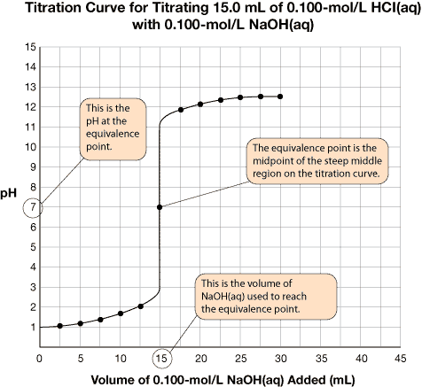
SC 1. Click on Module 7 Lesson 3 Page 3 on your DVD. Select and perform Lab 10: Titration of Strong and Weak Acids. Draw the titration curves for the titration of both acids. (Ignore the typo in the Lab Manual that says CHEM 30 rather than CHEM 20).
 Self-Check Answer
Self-Check Answer
SC 1.
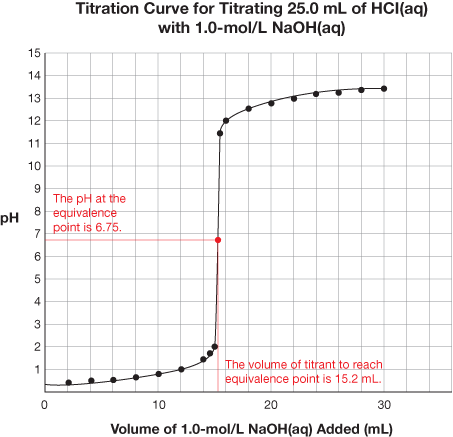

Titration |
Equivalence Point pH |
Volume of Titrant to Reach Equivalence Point |
HCl(aq) vs. NaOH(aq) |
6.75 |
15.2 mL |
CH3COOH(aq) vs. NaOH(aq) |
8.75 |
4.0 mL |
If you titrate HCl(aq) with NaOH(aq)—two colourless solutions—without using an indicator, there will be no colour change to signify that the equivalence point has been reached. Indicators respond to changes in pH and provide a dramatic colour change to signify the endpoint of a titration. But with so many indicators to choose from, which one is best?
Read “Choosing Acid-Base Indicators for Titration” on page 336 of your textbook.
A good rule of thumb for selecting an indicator is that the midpoint pH of the range of colour change is equal to the equivalence point pH.
SC 2. Refer back to the titration curves you drew for Lab 10: Titration of Strong and Weak Acids. Use the information provided in the “Acid-Base Indicators” table in the Chemistry Data Booklet to identify suitable indicators that will signify the endpoint for each of the titrations. Then indicate the colour change that would signify the endpoint of the titration.
SC 2.
Titration |
Suitable Indicator |
pH of Indicator |
Colour Change at Endpoint |
HCl(aq) vs. NaOH(aq) |
bromothymol blue |
6–7.6
6–8.0 |
green (intermediate between yellow to blue) orange (intermediate between yellow and red) |
CH3COOH(aq) vs. NaOH(aq) |
thymol blue phenolphthalein |
8–9.6
8–10.0 |
green (intermediate between yellow to blue) pink |
Complete questions 2 and 3 in the Module 7 Lesson 3 Assignment.
Purpose:
A manufacturer of ASA tablets claims that each pill contains 325 mg of acetylsalicylic acid (ASA). You will analyze data from a titration experiment that will determine the mass of ASA in the tablets.
Procedure:
Read “Investigation 8.6: Titration Analysis of ASA” on page 345 of your textbook. Use the sample data obtained by a student to calculate the average mass of ASA in the tablets.
Observations:

Answer questions 4 and 5 in the Module 7 Lesson 3 Assignment.
© Mike Rogal/shutterstock
Acetylsalicylic acid (ASA) has many other effects on the human body in addition to the ability to relieve pain. As a result, ASA is often prescribed by doctors to treat patients with a variety of ailments. What are some of the other uses for ASA? Are there risks in prescribing the use of ASA for so many people?
Search the Internet to identify risks associated with ASA. Which risks are of concern to children, young adults, and older adults? How might these risks influence your choice of medication?
Save a copy of the list of risks associated with ASA to your course folder. Include comments on how these risks might influence your use of ASA in the future.
In this lesson you extended your knowledge of titrations by learning how to analyze titration curves. The data for a titration curve can be obtained by using a pH meter to record the pH while a sample is being titrated. One of the most important parts of a titration curve is the equivalence point, located at the midpoint of the steep middle region. The equivalence point signifies the completion of the reaction. The volume of titrant required to reach the equivalence point is used to complete calculations involved in quantitative analysis. The pH at the equivalence point is used to select an appropriate indicator for the titration. In Reflect and Connect, you applied your knowledge of titration analysis to determine the amount of ASA (acetylsalicylic acid) present in a tablet of Aspirin.
titration curve: a graph of the change in pH of the system being studied as standardized solution is added
titration: a method of analyzing a solution by adding known amounts of a standardized solution until an endpoint is produced
titration curve: a graph of the change in pH of the system being studied as standardized solution is added
Quantitative analysis involves a variety of techniques that rely on stoichiometric relationships between substances involved in a reaction. In this module you performed a titration using an acid and a base. You also performed a titration to determine the quantity of vitamin C in fruit juice. By studying some of the considerations necessary to support a journey into space, you considered the following questions:
How is stoichiometry used in the design of a chemical system?
How is stoichiometry used in the analysis of a chemical system?
These questions are relevant to more than spaceflight, since the principles of stoichiometry can be applied to any process in which different components combine and form into new arrangements. Think about this the next time you are preparing sandwiches or planning a picnic for a large group of people. You may be surprised to find yourself thinking in ratios that relate the number of people attending to the number of plates required or the number of veggie burgers to be prepared.
The assessment in this module consists of the following:
In Module 6 you applied the stoichiometric method to examine a number of chemical systems, including the chemical reaction involved in launching the Space Shuttle. You learned that careful consideration of chemical quantities is essential to ensuring the desired result for a chemical process. In Module 7 you learned how important it is to consider appropriate chemical quantities in the designs of the chemical systems within a spacecraft and in other situations.
Regardless of whether a substance was a solid, a gas, or dissolved within a solution, predictions made using stoichiometry were confirmed by the experiments you performed. You also learned that stoichiometric relationships can be shown in a graph, such as a titration curve.
Knowledge of the relationships that involve the quantities of substances involved in a reaction, in addition to the ability to apply the stoichiometric method and perform calculations, is an essential skill you will need in Chemistry 30.
The last assessment of this unit is a unit test. Your work on the assignments has prepared you to complete the Unit D Test. When you have finished reviewing all of the marked assignments for this unit, phone or email your lead teacher to get the password to the unit test. If you have not had all of your assignments in this unit marked, you will not be given the password.
Congratulations!
You have completed the Chemistry 20 course content. The last thing left to do is write your final exam.
I wish you all the best in your exam and future endeavors.
John Pachkowski - Chemistry 20 lead teacher
Alberta Distance Learning Centre
Phone - Toll Free 1-866-774-5333 - extension 5233
Fax 780-674-6977